1 Combo automatique : Poing x6On appuie seulement sur Poing, en cadence : frappe, revers, moulinet, rebond sous le bras, derriere le dos, grand fouet. Six coups sans trou, le final projette.
Touches : Poing x6 (sans direction) | Durée : 196 images (3.27 s) | Mesure : 6 coup(s) lancé(s), 66 points de dégâts
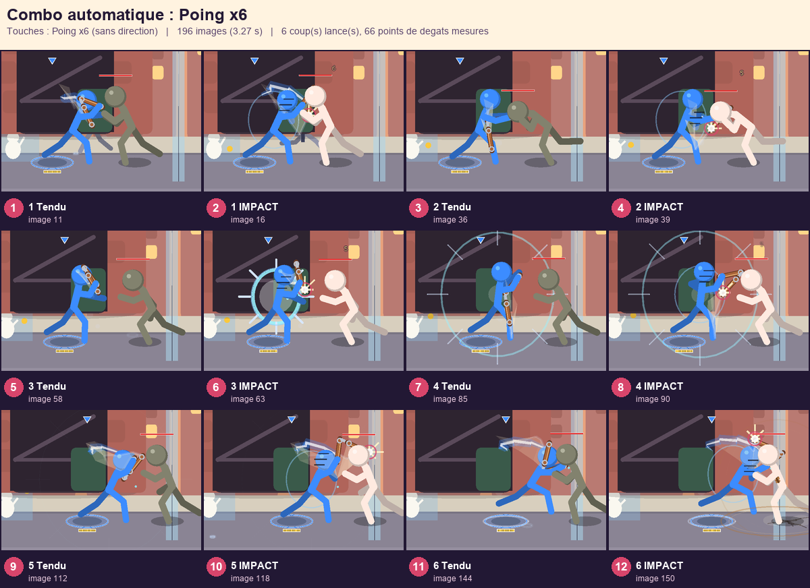
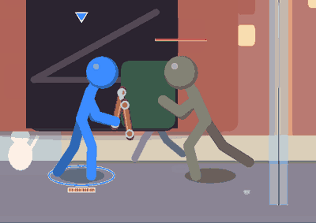
Moteur, temps réel (gel d'impact conservé) Ralenti x0,25 Valider À refaire
2 1. Frappe de batonOuverture : baton arme derriere la tete, frappe diagonale. Rapide (5 images).
Touches : Poing | Durée : 66 images (1.10 s) | Mesure : 1 coup(s) lancé(s), 4 points de dégâts
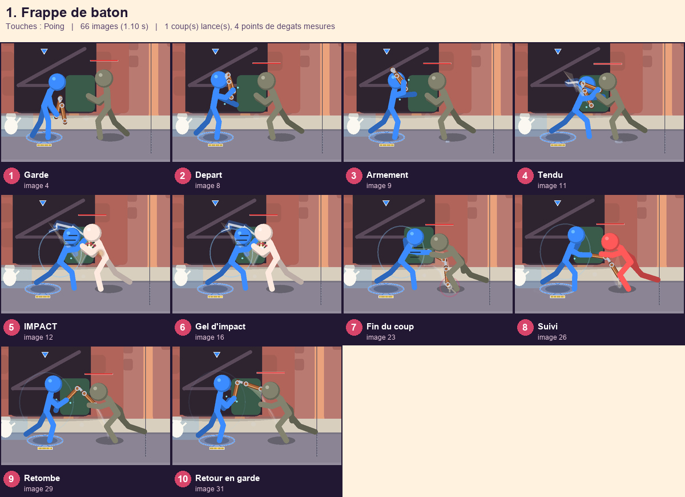
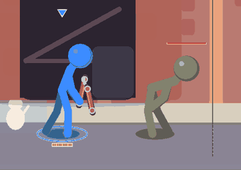
Moteur, temps réel (gel d'impact conservé) Ralenti x0,25 Valider À refaire
3 2. Revers de chaineLe bras repart derriere la hanche et fauche a l'horizontale. Le plus rapide de la serie (4 images).
Touches : Poing (2e coup) | Durée : 62 images (1.03 s) | Mesure : 1 coup(s) lancé(s), 6 points de dégâts
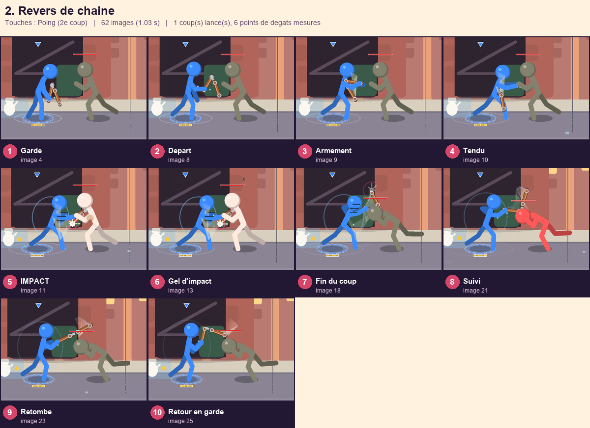
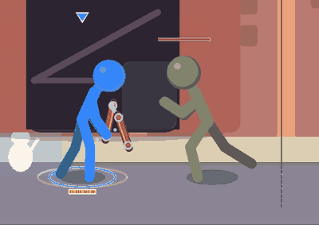
Moteur, temps réel (gel d'impact conservé) 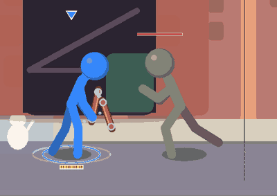
Ralenti x0,25 Valider À refaire
4 3. MoulinetLe baton tourne autour de la main, la chaine s'ouvre en cercle, l'adversaire est cueilli au passage.
Touches : Poing (3e coup) | Durée : 66 images (1.10 s) | Mesure : 1 coup(s) lancé(s), 6 points de dégâts
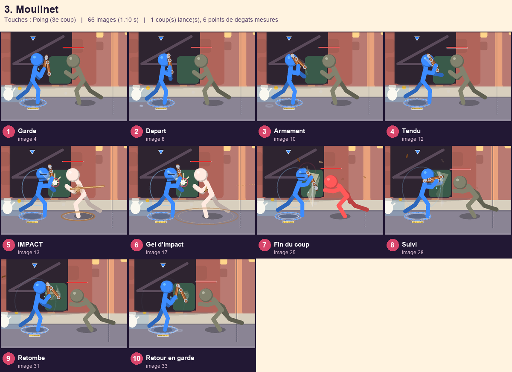
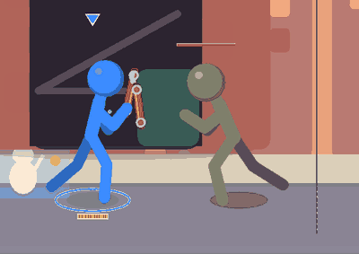
Moteur, temps réel (gel d'impact conservé) 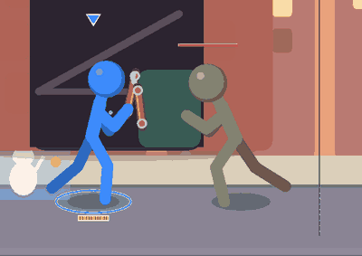
Ralenti x0,25 Valider À refaire
5 4. Rebond sous le brasMain basse contre le flanc, le baton rebondit sous le bras et remonte en diagonale.
Touches : Poing (4e coup) | Durée : 66 images (1.10 s) | Mesure : 1 coup(s) lancé(s), 7 points de dégâts
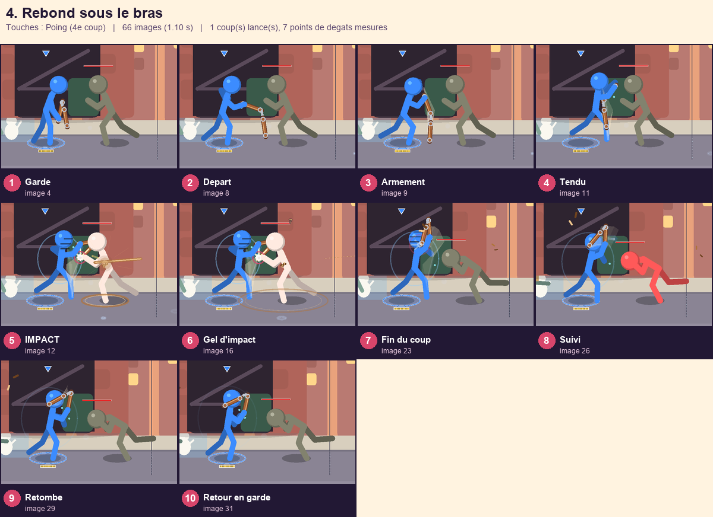
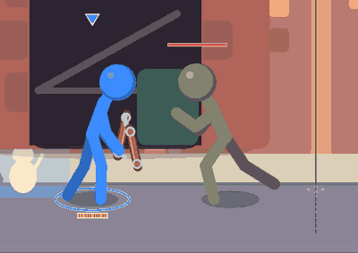
Moteur, temps réel (gel d'impact conservé) 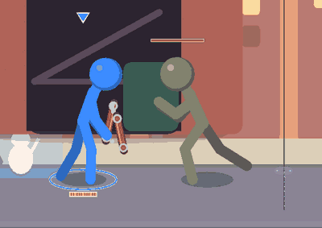
Ralenti x0,25 Valider À refaire
6 5. Derriere le dosLa main passe derriere la tete, le baton fait le tour du cou et s'abat de haut.
Touches : Poing (5e coup) | Durée : 67 images (1.12 s) | Mesure : 1 coup(s) lancé(s), 8 points de dégâts
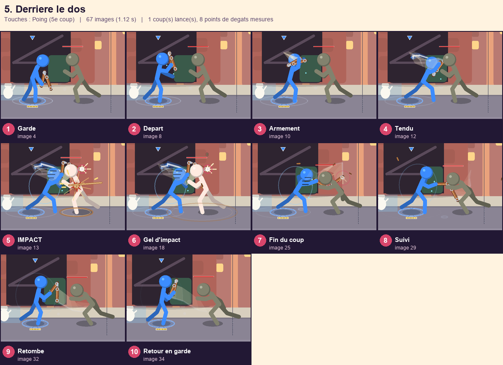
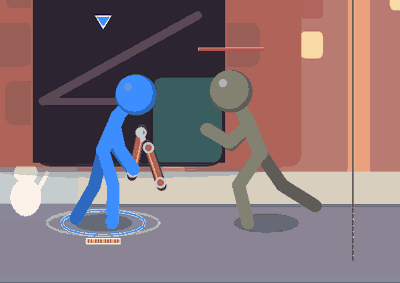
Moteur, temps réel (gel d'impact conservé) 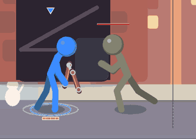
Ralenti x0,25 Valider À refaire
7 6. Fouet du dragon (final)Deux mains en l'air, petit bond, le baton s'abat de toute sa hauteur : gros gel d'impact, l'adversaire est projete.
Touches : Poing (6e coup) | Durée : 68 images (1.13 s) | Mesure : 1 coup(s) lancé(s), 14 points de dégâts
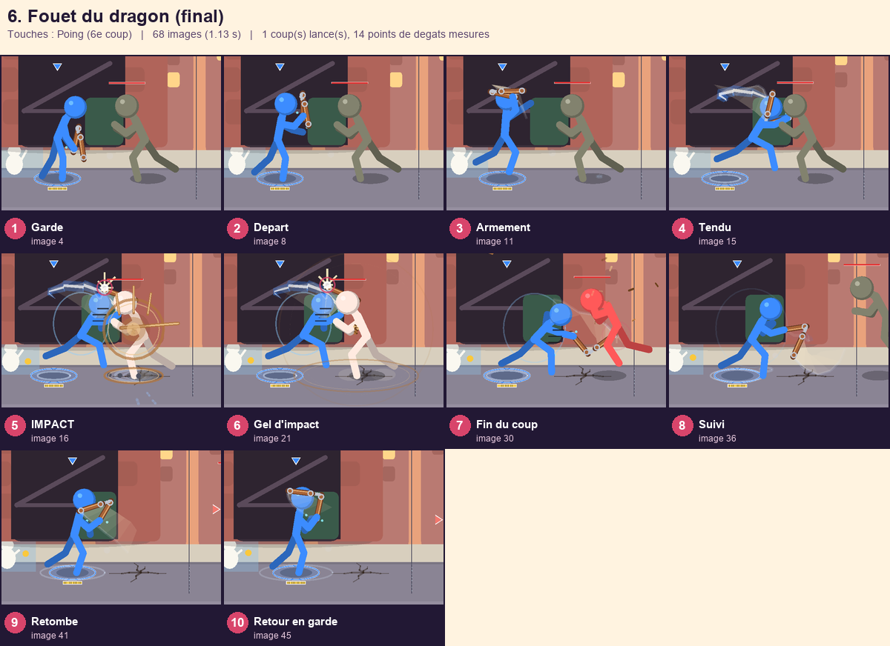
Moteur, temps réel (gel d'impact conservé) 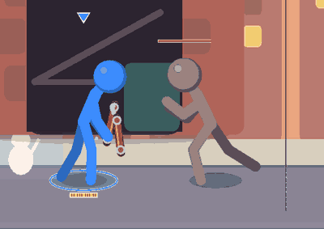
Ralenti x0,25 Valider À refaire
8 Haut + Poing : Montee du dragonMain basse derriere le genou, le baton remonte en diagonale et soulevre l'adversaire (lanceur).
Touches : Haut + Poing | Durée : 67 images (1.12 s) | Mesure : 1 coup(s) lancé(s), 8 points de dégâts
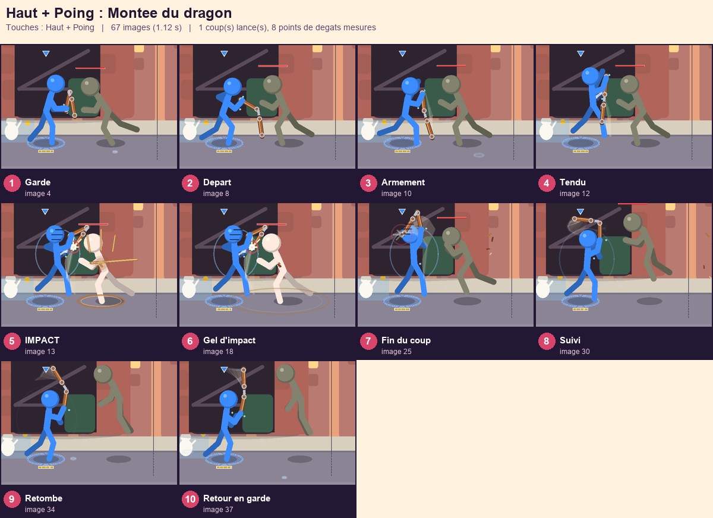
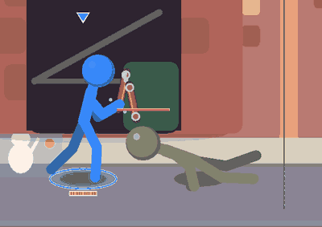
Moteur, temps réel (gel d'impact conservé) 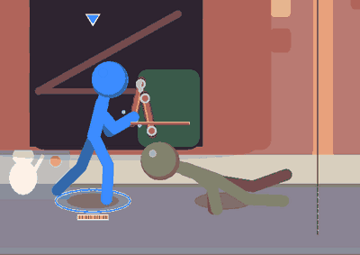
Ralenti x0,25 Valider À refaire
9 Bas + Poing : Balayage de chaineFente basse, le baton rase le sol a hauteur de chevilles : coup bas, fait trebucher.
Touches : Bas + Poing | Durée : 67 images (1.12 s) | Mesure : 1 coup(s) lancé(s), 6 points de dégâts
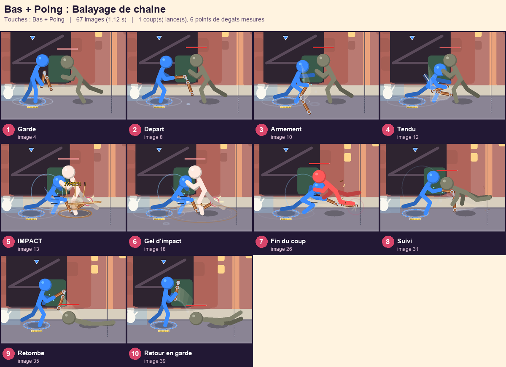
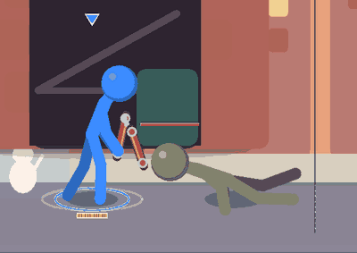
Moteur, temps réel (gel d'impact conservé) 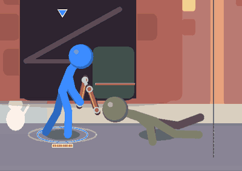
Ralenti x0,25 Valider À refaire
10 Avant + Poing : Lancer de chaineEstoc : le poing part de la hanche, le bras se tend, la chaine se tend derriere. Grande portee, pousse.
Touches : Avant + Poing | Durée : 67 images (1.12 s) | Mesure : 1 coup(s) lancé(s), 6 points de dégâts
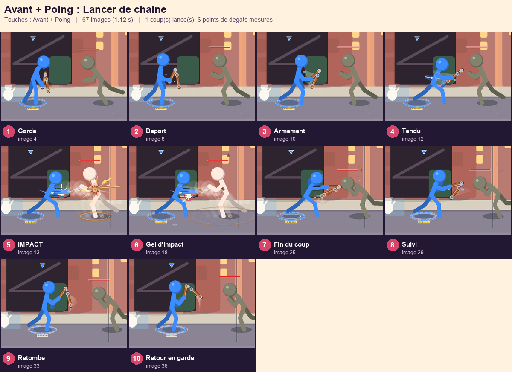
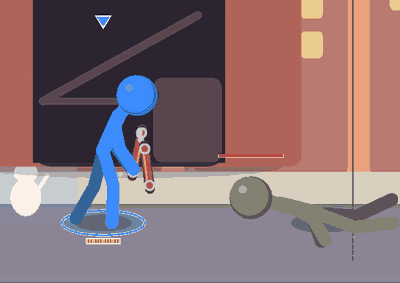
Moteur, temps réel (gel d'impact conservé) 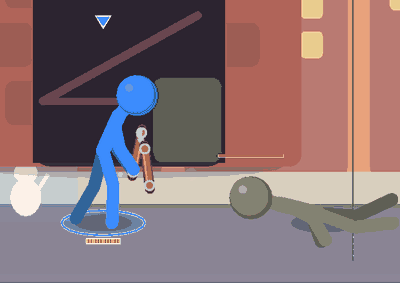
Ralenti x0,25 Valider À refaire
11 Arriere + Poing : Moulinet de reculOn recule d'un pas en faisant tourner le baton a plat au-dessus de la tete : balaie autour de soi.
Touches : Arriere + Poing | Durée : 66 images (1.10 s) | Mesure : 1 coup(s) lancé(s), 7 points de dégâts
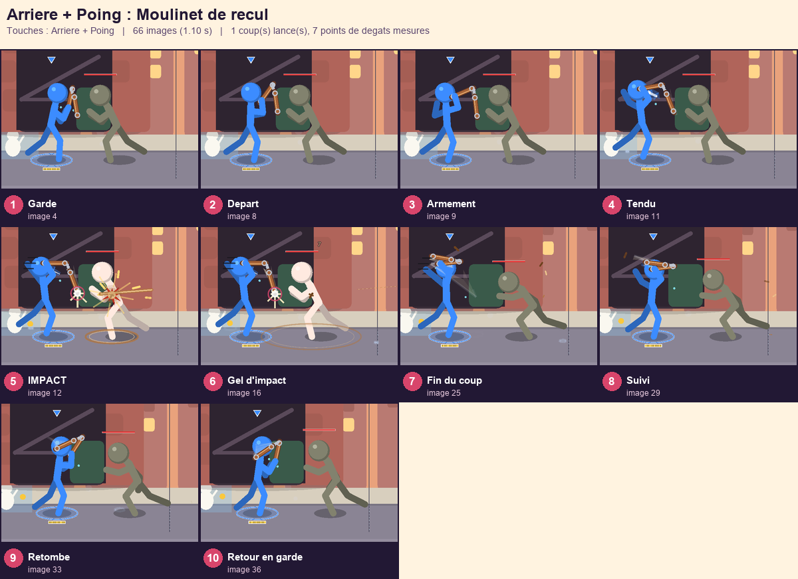
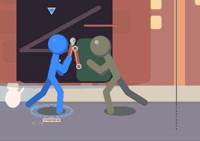
Moteur, temps réel (gel d'impact conservé) Ralenti x0,25 Valider À refaire
12 En l'air : frappe plongeanteSaut, puis Poing : le baton tombe d'en haut et fait retomber la cible.
Touches : Saut, puis Poing | Durée : 84 images (1.40 s) | Mesure : 1 coup(s) lancé(s), 7 points de dégâts
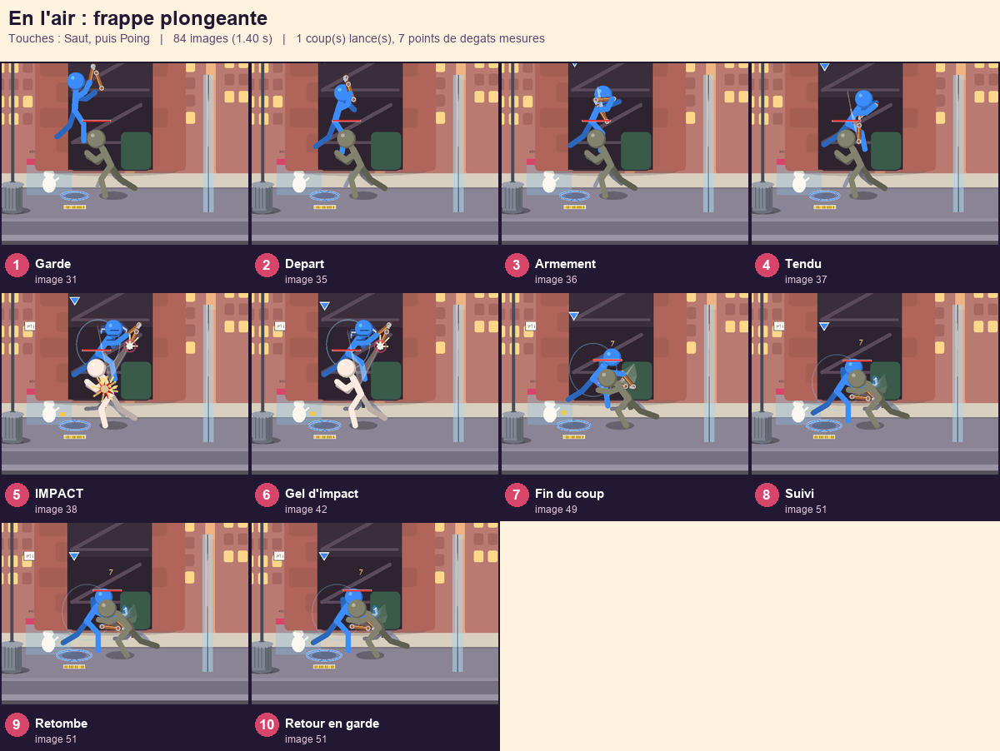
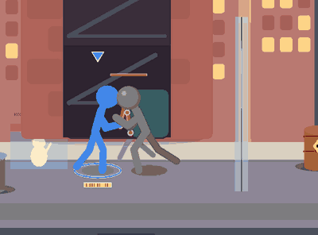
Moteur, temps réel (gel d'impact conservé) 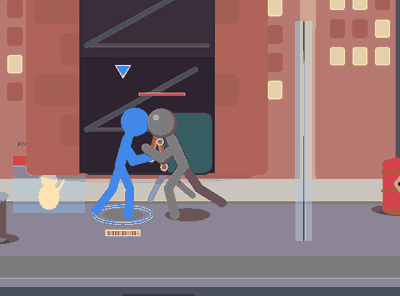
Ralenti x0,25 Valider À refaire
13 Pied : de vrais coups de piedAvec le nunchaku en main, Pied donne les coups de pied normaux du heros (le nunchaku n'est pas lance : il se balance au poing).
Touches : Pied, Pied | Durée : 106 images (1.77 s) | Mesure : 2 coup(s) lancé(s), 33 points de dégâts
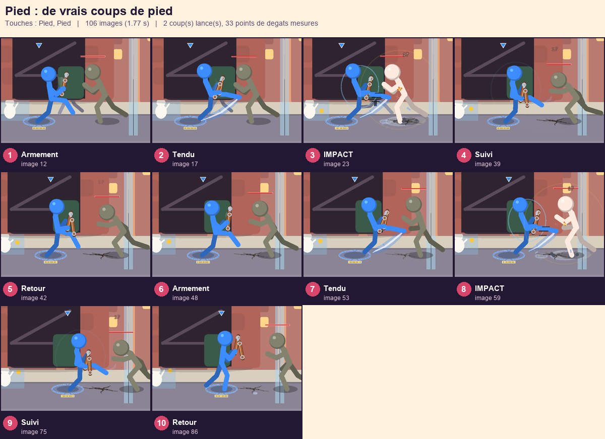
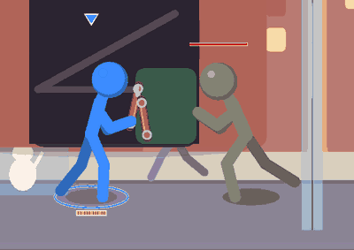
Moteur, temps réel (gel d'impact conservé) 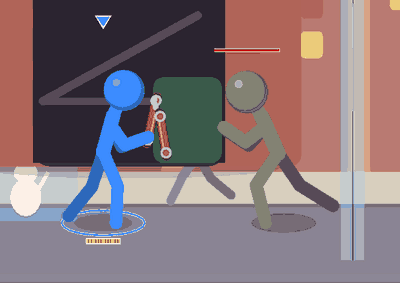
Ralenti x0,25 Valider À refaire
14 Combo dirige : Poing, Poing, Haut+Poing, Avant+Poing, PiedDeux coups de la serie, une montee qui lance, un lancer de chaine, puis un coup de pied : on dirige un petit peu sans jamais perdre la fluidite.
Touches : Poing, Poing, Haut+Poing, Avant+Poing, Pied | Durée : 152 images (2.53 s) | Mesure : 5 coup(s) lancé(s), 34 points de dégâts
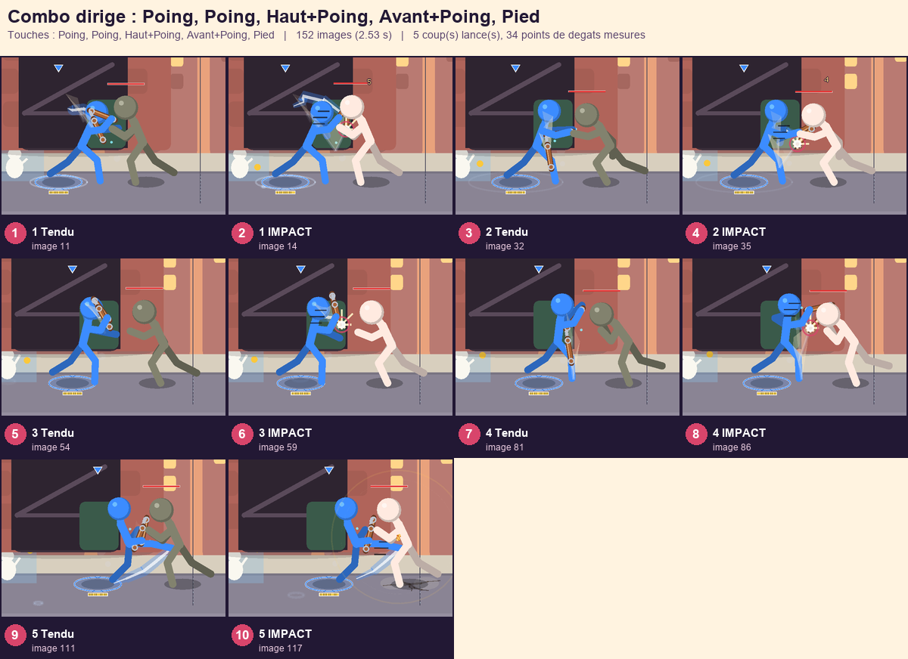
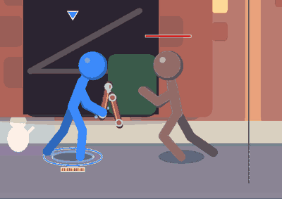
Moteur, temps réel (gel d'impact conservé) 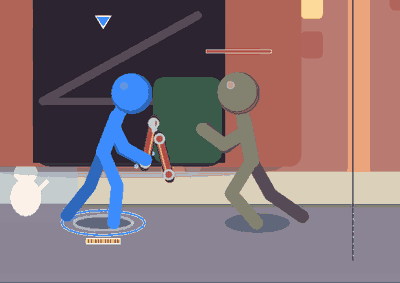
Ralenti x0,25 Valider À refaire